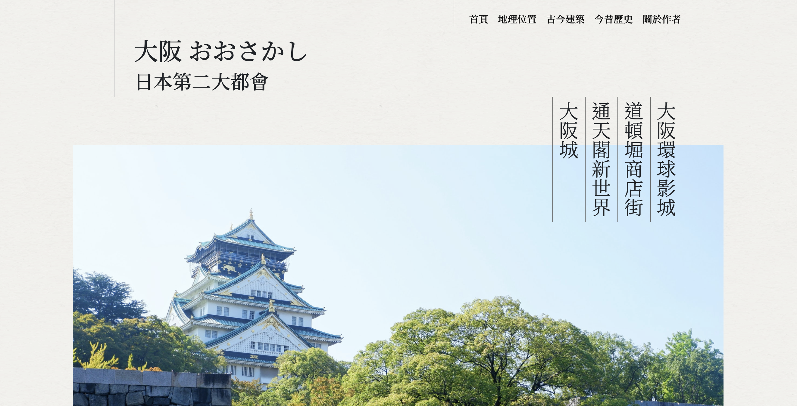

<!DOCTYPE html>
<html lang="zh-Hant">
  <head>
    <meta charset="UTF-8" />
    <meta http-equiv="X-UA-Compatible" content="IE=edge" />
    <meta name="viewport" content="width=device-width, initial-scale=1.0" />
    <meta name="robots" content="index, follow" />
    <meta name="author" content="Chun-Hung, Peng" />
    <title>作品集 | 彭俊閎前端個人簡歷</title>
    <meta name="description" content="彭俊閎前端個人簡歷" />
    <link rel="preconnect" href="https://fonts.gstatic.com" />
    <link
      href="https://fonts.googleapis.com/css2?family=Noto+Sans+TC&display=swap"
      rel="stylesheet"
    />
    <link rel="stylesheet" href="../styles/style.css" />
  </head>
  <body>
    <header>
      <nav>
        <ul>
          <li><a href="/index.html">首頁</a></li>
          <li><a href="../pages/resume.html">個人履歷</a></li>
          <li><a class="active" href="../pages/portfolio.html">作品集</a></li>
          <li><a href="../pages/contact.html">聯絡方式</a></li>
        </ul>
      </nav>
    </header>
    <!-- 聯絡方式 -->
    <main class="portfolio">
    <div class="bgWrap"></div>
    <div class="portContent">
    <section class="portBox">
      
      <div class="portInfo">
        <h3>沖繩旅遊社網站</h3>
        <br />
        <p>
          透過HTML、CSS和RWD建構一頁式頁的旅行社介紹網頁，即使使用不同裝置也能流暢的瀏覽網頁。
        </p>
        <br>
        <p>主要使用技術：HTML、CSS、RWD</p>
        <br>
        <a href="https://chun-hung-peng.github.io/Okinawa-travel-agency/" target="_blank">前往網頁</a>
        <br>
        <a href="https://github.com/Chun-Hung-Peng/Okinawa-travel-agency" target="_blank">查看源代碼</a>
      </div>
    </section>
    <section class="portBox-re">
      
      <div class="portInfo">
        <h3>大阪介紹網</h3>
        <br />
        <p>
          以HTML和CSS建構介紹大阪的資訊網，透過不同頁面的跳轉來介紹大阪的地理、建築等特色，此網站也透過RWD讓不同裝置皆能順暢的瀏覽網頁。
        </p>
        <br>
        <p>主要使用技術：HTML、CSS、RWD</p>
        <br>
        <a href="https://chun-hung-peng.github.io/Introduction-to-Osaka/" target="_blank">前往網頁</a>
        <br>
        <a href="https://github.com/Chun-Hung-Peng/Introduction-to-Osaka" target="_blank">查看源代碼</a>
      </div>
    </section>
    <section class="portBox">
      
      <div class="portInfo">
        <h3>Nike Shop</h3>
        <br />
        <p>
          使用React搭建一個能夠使用搜尋、登入、註冊、購物車和修改商品功能的頁面，CSS佈局以react-bootstrap(Bootstrap 4)作為主要的使用工具。以axios對本地伺服器發送請求，並透過json-server做回應和資料的修改，如：產品資訊、購物車數量、登入、註冊和修改產品內容。
        </p>
        <br>
        <p>附註：以下的網站為github靜態網站，未連接API，需使用json-server中的server搭配才能做交互與得到商品資訊</p>
        <br>
        <p>主要使用技術：React、Bootstrap 4、axios、json-server</p>
        <br>
        <a href="https://chun-hung-peng.github.io/nike-shop-practice/" target="_blank">前往網頁</a>
        <br>
        <a href="https://github.com/Chun-Hung-Peng/nike-shop-practice" target="_blank">查看源代碼</a>
        <br>
        <a href="https://github.com/Chun-Hung-Peng/nike-shop-API" target="_blank">查看server</a>
      </div>
    </section>
    <section class="portBox-re">
      
      <div class="portInfo">
        <h3>動物森友會攻略網</h3>
        <br />
        <p>
          以任天堂的動物森友會作為主題，構建一個文章攻略網站。CSS部分以styled-components的純JS方式撰寫，組件間交互以Redux作為工具。
        </p>
        <br>
        <p>主要使用技術：React、styled-components、Redux</p>
        <br>
        <a href="https://github.com/Chun-Hung-Peng/animalcrossing" target="_blank">查看源代碼</a>
      </div>
    </section>
    <section class="portBox">
      
      <div class="portInfo">
        <h3>個人垂直簡歷</h3>
        <br />
        <p>
          以HTMl和CSS構建的垂直式單頁個人簡歷，透過簡單JavaScript和Bootstrap動畫建構出的個人簡歷。
        </p>
        <br>
        <p>主要使用技術：HTML、CSS、Bootstrap 4</p>
        <br>
        <a href="https://chun-hung-peng.github.io/CV-v2/" target="_blank">前往網頁</a>
        <br>
        <a href="https://github.com/Chun-Hung-Peng/CV-v2" target="_blank">查看源代碼</a>
      </div>
    </section>
    <section class="portBox-re">
      
      <div class="portInfo">
        <h3>Todo List</h3>
        <br />
        <p>
          透過基礎JavaScript架構的簡單Todo List網頁。
        </p>
        <br>
        <p>主要使用技術：HTML、CSS、JavaScript</p>
        <br>
        <a href="https://chun-hung-peng.github.io/todo-list/" target="_blank">前往網頁</a>
        <br>
        <a href="https://github.com/Chun-Hung-Peng/todo-list" target="_blank">查看源代碼</a>
      </div>
    </section>
  </div>
    </main>
    </div>
  </body>
</html>
